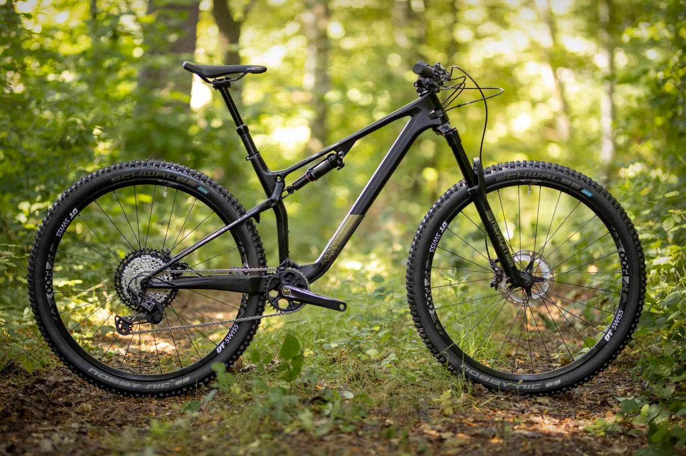
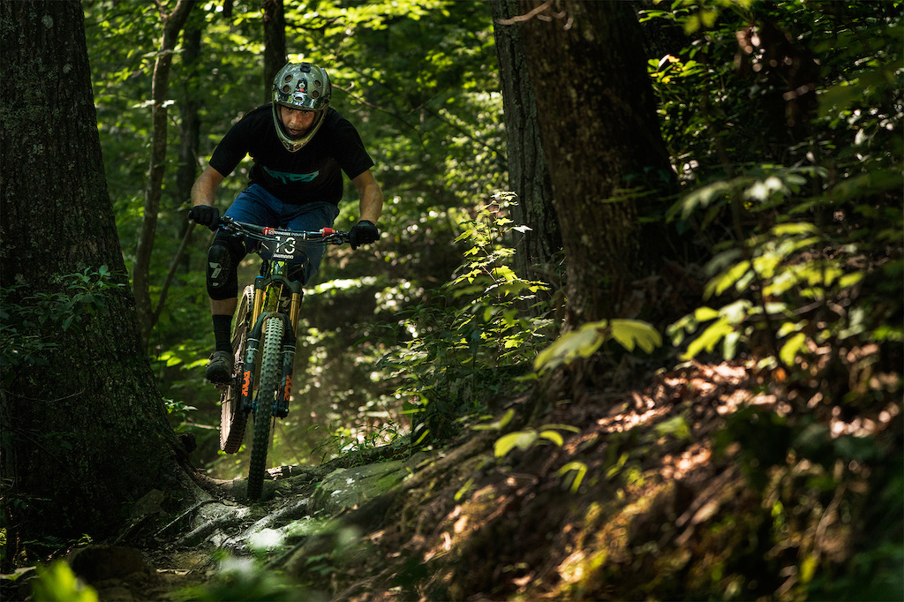
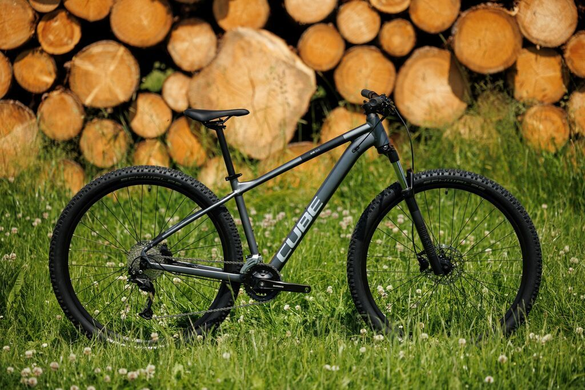

Příroda
Lesní stezky a výhledy, které z auta neuvidíš.
Vítej na mém webu o horských kolech. Najdeš tu tipy na výlety, základní vybavení a fotky z jízd.

Lesní stezky a výhledy, které z auta neuvidíš.

Sjezdy, skoky a zatáčky, u kterých se zrychlí tep.

Skvělý způsob, jak vypnout po škole.
Bláto, skoky a lesní stezky. Mrkni na fotky v galerii!
Prohlédnout galerii